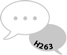
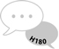
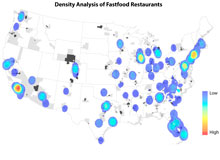

Conference with Students
I was attending Illinois 25th HIV/STD Conference with presenting MPH students who are future workforce in public health.
Dr. Killam and Dr. Chen
Congrats on Dr. Lenore Killam’s Defense of dissertation chaired by Dr. Brian Chen
Mapping Activity
My students were actively participating in an active learning activity to facilitate the understanding of a complex physiological concept.
Online Teaching Award
I was honored at the 2017 UIS Faculty Award Reception.
Hello World!
This is Dr. Brian Chen, an Associate Professor and Chair of the Department of Public Health at the world-known University of Illinois system in the Capital City of Illinois, United States. My research areas are Health Inequality, Health Policy, and e-Education in Public Health. I have ample and diversified teaching experiences including Biostatistics, Social Determinants of Health, Health Economics (graduate-level MPH courses), Human Well-Being, and Addiction (undergraduate-level). I have also involved in various collaborative Community-Based Participatory Research (CBPR) projects for the communities.
Student Appreciation
-

This course has been by far the most interactive and well planned classes I have taken as a student. I would recommend this class and professor to any student. Mr. Chen presented a clear knowledge of the subject, and was extremely enthusiastic.
Spring, 2011
“Hi, Brian, Thank you so much for the tree diagram animation, it helped tremendously. I'm not sure why I was making that so difficult, but after re-opening my homework I can see where I went wrong.”
Fall, 2011
-
I liked all the in class activities the most about this course. It made learning the material more fun.
Spring, 2012 First 8-Week
Exams were challenging, but I got tremendous help from the mind map and concept map taught by Professor Chen. These methods were very helpful. They also stimulated my thinking and I highly recommend Professor Chen to my friends since the active and interactive teaching style made this course extremely valuable.
Spring, 2011
-

I really enjoyed Professor Chen’s interactive teaching style. I learned a lot from his games and powerpoints, and I gained insight from activities like in class relaxation, breathing and Tai Chi.
Fall, 2010
Brian is so understanding, helpful, and innovative, so I have nothing bad to say about him.
Spring, 2012 First 8-Week
-
I liked how the material covered in this course explained matter I can related to. I liked how the instructor was personable and could also relate.
Fall, 2010
“Hi, Brian,Thank you, I appreciate that you have taken time to send this out. I have also come to appreciate all the hard work you put into sending out, grading, and keeping track of our assignments earlier in the semester. If you intend to teach after you earn your degree, I think you will do well. Either way, best wishes. Thanks again”
Fall, 2011
Research Project
-
Environment and Obesity

The purpose of the study is to examine the longitudinal effects of time, individual demographics, socioeconomic status, density of fast food restaurants, and proportion of people who walk to work on the trends of body mass index among middle-aged and older adults from 2000 to 2010.
-
Medicare Part D and Health outcome
The aim of the research is to examine the effects of Medicare Part D on health outcomes among older adults. Several studies have shown that the initiation of this policy is associated with other effects such as reduced out-of-pocket expenses and improved adherence to essential medications for Medicare beneficiaries.
Teaching & Active Learning Activities
-
Extra instructional video to facilitate the understanding of sensitivity and specificity
-
Instructional video - Demo for ANOVA (Analysis of Variance) & Tukey’s Test
-
Demo of quartiles, boxplot creation, and IQR (Interquartile Range) rule for outliers
-
One of my students’ favorite active learning activities for exam preparation & reviews
-
Ice-breaking activity and review of textbook materials during the first day of class
My goals are to help my students develop abilities to promote healthy life styles and disease prevention tactics, understand credible health information and statistics, analyze the effectiveness of public health programs, and apply the concepts of evidence-based personal and public health in the practice setting. I accomplish these goals by (1) using of thought-provoking methods to facilitate students’ learning and encourage students to learn through stimulating class activities, (2) providing timely feedback and supplementary teaching materials to encourage students to take responsibility for learning, (3) creating collaborative learning environments to explore and evaluate multiple perspectives, (4) connecting the classroom to the real world and encouraging students to use creativity from what they have learned to face challenges, and (5) improving continuously.